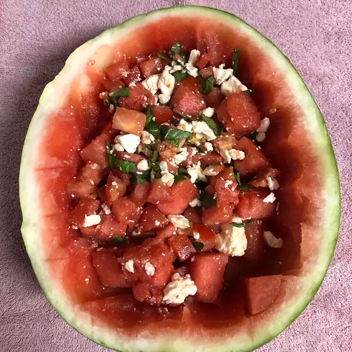

Watermelon Salad Recipe

Description
An unexpected but delicously addictive flavor combination! This recipe serves two, but you may want it all for yourself.
The perfect combination of red, white and green. All served up fresh and ready to eat in moments.
Ingredients
- 1 pint cherry tomatoes, halved
- 2 cups cubed seeded watermelon
- 6 large basil leaves, thinly sliced
- 1/2 cup crumbled feta cheese
- 1 teaspoon lemon zest
- 2 tablespoons extra-virgin olive oil
- 1 1/2 tablespoons white balsamic vinegar
- salt and pepper to taste